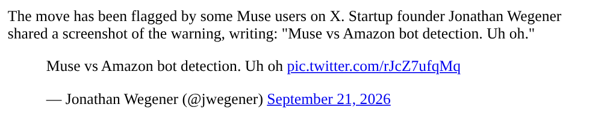
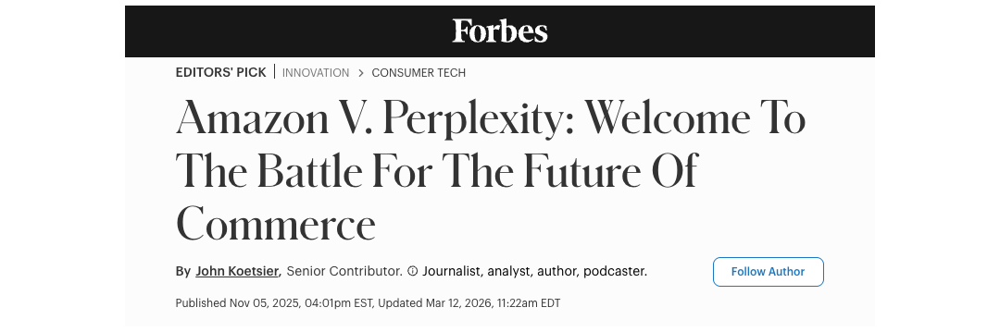
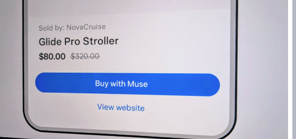

最近黑五，我经常用 Muse 帮我比价格，看看哪些折扣划算，偶尔让它加个购物车，最后自己付款。Muse 能查到 Walmart 和 Target 的商品价格，可一打开 Amazon 的商品页就被拦了—「Access restricted」。

Amazon 的原图，弹窗直接写了「unauthorized AI agent」。
平时用 agent 逛别的网站，我偶尔会看到「I’m not a robot」。每次我都想，让 agent 勾个框也太简单了吧。真碰上选红绿灯的九宫格，我有时候拿不准的地方，Agent 肯定选得比我还准！
我自己点开商品页，和 Muse 替我点开，Amazon 怎么知道是谁点的？
我让 Codex 访问了一次 Amazon 首页。下面是这次请求的节选。
GET / HTTP/1.1
Host: www.amazon.com
User-Agent: curl/8.14.1 Agent/CodexUser-Agent 是发请求的软件用来介绍自己的字段。Amazon 要求，agent 从访问它家服务的第一条 HTTP/HTTPS 请求起，每一条都得在这里写上 Agent/名字。这次的 Agent/Codex 是我让 curl 加的。至于 Muse 那次，光看弹窗，我看不出是什么触发了拦截，也不知道 Amazon 有没有认出 Muse。Amazon 使用条款 · Agents §3
9 月 20 日，Amazon 向科技媒体 GeekWire 确认，它已经拦截了 Muse 代客购物的请求。按 Amazon 的说法，Muse 浏览时没有表明身份。GeekWire 报道及发言人原话

Jonathan Wegener 也晒过类似提示。上图是 Business Insider 引用这条帖子的截图。去 X 看原帖和他拍的弹窗 · Business Insider 报道
10 月中旬，有网友晒出 Grok Bot 在 Amazon 下单被拦的截图。马斯克转发说，那就让 Grok 去别家买，还能找个更好的 deal。后来另一个网友问，要不要干脆做个 X Shop？他回了句「Maybe we should start a competitor to Amazon 🤔」。
叫 Grok 去别家买的原帖 · 提议做 Amazon 竞争对手的原帖 · 原帖存档
那 agent 不报名字，Amazon 还能认出来吗？
技术上，agent 可以不报名字，Amazon 也有可能认出它。2025 年 11 月，Amazon 起诉了 Perplexity。起诉书里就讲到了一个具体例子。
Comet 是 Perplexity 的浏览器，里面的 Comet Assistant 能替用户点网页。Amazon 在起诉书里说，它已经要求 Perplexity 停手，对方却还让 agent 进入需要登录的顾客账户。

2025 年 11 月，Forbes 报道了 Amazon 要求 Perplexity 停止让 Comet 的 agent 替顾客在 Amazon 购物的事。Forbes 原文
按 Amazon 在起诉书里的说法，Comet 的 agent 发来的 User-Agent 和普通 Chrome 一样。工程师分析了网络流量和浏览器数据，找出一组能把 Comet 的操作和顾客自己浏览区分开的特征。Amazon 把这组特征叫作「浏览器指纹」，但没说具体看了哪些信号。
认出来之后，拦的是谁？Amazon 说，有时它把使用 Comet 的顾客账户也拦了，等顾客回来自己逛，还得给账户解封。按 Amazon 的说法，如果 Comet 在 User-Agent 里报了名字，它就可以只拦 agent 的请求。
2026 年 8 月 4 日，上诉法院撤销了初步禁令，把案子发回继续审理。
Perplexity 的 Comet 使用指南 · Amazon 起诉书 · 第 34、38、62 段 · 上诉法院裁定
Amazon、Walmart 和 Target 都让 agent 帮我购物吗？
我平时用 Muse 和 Grok Bot 帮我购物，这里就说说这两个。
| 店 | Muse | Grok Bot |
|---|---|---|
| Amazon | 我遇到拦截 | 网友下单被拦 |
| Walmart | 正式接入 | 我查到过价格 |
| Target | 我查到过价格 | 我查到过价格 |
Target 在条款里列出了它批准的购物 agent（Target 自家的 AI Shopping Assistant、OAI、Google 和 Microsoft）。Muse 和 Grok Bot 都不在名单上，光看它们给我的价格，看不出价格从哪儿来，也不能据此推断 Target 正式接入了它们。
Walmart 的 Muse 接入公告 · 11 月 24 日 · Target 条款 · Agentic Commerce and Delegated Access · Grok Bot 用户的下单截图 · Walmart 的 agent 访问条款
Walmart 也要 agent 报名字，什么时候报？
Walmart 的通用条款写的是，Walmart 要求时，agent 要提供产品名、版本和背后公司的信息。Amazon 的条款则写到了每一条请求的 User-Agent。
Walmart 正式接入了 Meta 的个人 AI 助手 Muse。比如我让 Muse 找一台 500 美元以内的电视，它可以通过 Walmart 的接口找商品。第一次让它加购物车时，我要在 Walmart 账户里设置 Agent Profile，可以给它设个支出上限。在我设的范围内，Walmart 可以让它自动结账。
结账时还有一层限制。付款用的令牌绑定了商家、购物车、金额和本次会话。我设的购物规则可以接着用，但每笔交易都得拿一枚新令牌，用完就作废。
Walmart 的身份要求 §3、顾客授权 §4 和 Gateway 附录
我买了东西，Muse 和 Grok Bot 如何盈利？
别人分享过这张推车的商品图，我也见过类似的按钮。我很好奇，要是我点「Buy with Muse」下单，Muse 会收商家的钱吗？

「Buy with Muse」购物入口原图。
Meta 在三季度财报电话会上说，它希望大多数人能免费用 Muse，想用更高级的模型或更多用量，用户也可以订阅。至于购物，Meta 打算对 Muse 帮忙促成的交易收费，预计由商家来付。具体到 Walmart 这一单有没有付、付多少，两家都没在这些材料里披露。
按新的 The X Subscription，Premium 及以上档位包含 Grok Bot。SpaceX 的三季报提到了 Grok 和 X 的订阅收入。
我很好奇，以后要是两家店卖同一款产品，一家愿意给 agent 佣金，另一家便宜 10 美元，我让它帮我找最便宜的，agent会把哪家排在前面？
国内也开始把购物放进 AI 对话里了。11 月 24 日，蓝鲸新闻实测发现，部分用户的豆包里多了「豆包购物」入口。在对话里说想买什么，豆包帮你找商品，再去抖音电商提供的页面下单。 我还没细看国内的盈利模式，也很好奇，通过豆包买一单，商家会给豆包付佣金吗？
今年黑五，我的钱花在哪儿了？
前两天为了用上 deal，Muse 帮我穷举下单方式，算怎么最划算。我可太感动了！能少花钱，还能省时间。可能少花钱，是 Amazon 不太想看到的吧。
我认为用 agent 买东西是未来大趋势。今年黑五，我的东西都在 Walmart 和 Target 买了。
Walmart 一直讲 Every Day Low Prices。愿意让我的 agent 帮我算怎么更省钱，我觉得它做到了。